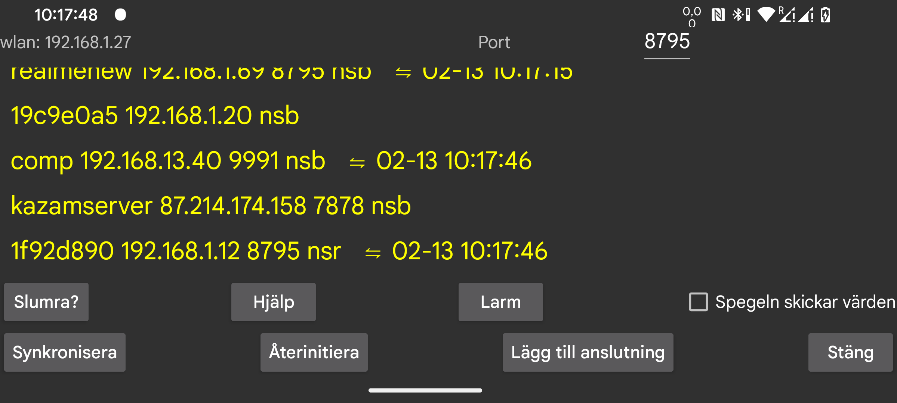

be de es fr it nl pl pt ru sv tr uk zh en
Skicka data till eller ta emot data från en annan enhet. Du kan ansluta till en Android-enhet som kör Juggluco för att visa data på samma sätt som här. Efter att ha tagit emot skanningsdata kan spegelenheten även kontakta sensorn via Bluetooth. För att säkerställa att endast en av enheterna kommer i kontakt med sensorn stängs "Sensor via Bluetooth" av automatiskt när strömmande värden kommer via IP/TCP.
På den här skärmen, efter wlan, visas enhetens lokala IP-adress som du bör ange på den andra enheten på ditt hemnätverk som du ansluter till (eller ditt modem om du ansluter på distans).
Efter Port kan du ändra vilken TCP-port som den här appen lyssnar på för anslutningar.
Genom att klicka på Lägg till anslutning kan du ange vilka värdar som ska anslutas och hur du ska ansluta.
En pålitlig nätverksanslutning är på Android störd av alla typer av batterioptimeringar och bakgrundsbegränsningar. Tryck på Slumra? För att få hjälp att ändra inställningarna.
Om Juggluco fungerar som en speglings-app (tar emot glukosvärden från en annan enhet som kör Juggluco), kan du trycka på Larm för att komma till en dialogruta där du kan ange larm för låg och hög glukosnivå och relaterade meddelanden.
Spegeln skickar värden: Om appen tar emot information om medicin, mat och träning från samma app på en annan enhet, bör du inte lägga till eller ändra dessa uppgifter här. Genom att kryssa i detta gör du det omöjligt att ändra informationen.
Synkronisering: skickar ny data till en ansluten enhet eller ber om ny data.
Återskapa: Stänger befintlig anslutning och skapar en ny.
Wifi (endast WearOS): När detta inte är ikryssat stängs WIFI av automatiskt efter en stund av WearOS för att spara batteri, och Juggluco växlar då till Bluetooth för anslutningen mellan telefonen och klockan. När det är ikryssat ombeds WearOS om att hålla WIFI igång längre, men det kan ändå stängas av till slut. Att ändra den här inställningen är vanligtvis inte nödvändigt, och tillverkarna av WearOS anser att det kan leda till ökad batteriförbrukning om WIFI hålls påslaget.
Befintliga anslutningar visas i en lista: namnet, IP-porten samt månad, dag och tid för den senaste lyckade synkroniseringen visas. Hur anslutningen används förkortas enligt följande:
För mer information om Speglings-anslutningar läs hjälpen under "Lägg till anslutning" och se https://www.juggluco.nl/Juggluco/index.html#mirror
Du kan köra Android Juggluco-appen på en Windows-, Macintosh- eller Linux-dator med hjälp av en Android-emulator (till exempel Genymotion). Juggluco på emulatorn tar emot data via en speglings-anslutning från en Android-telefon som är ansluten till sensorn. Nyp-rörelser (flytta två fingrar till eller från varandra) kan simuleras genom att trycka på en tangent (Kontroll i Genymotion) medan du flyttar muspekaren.